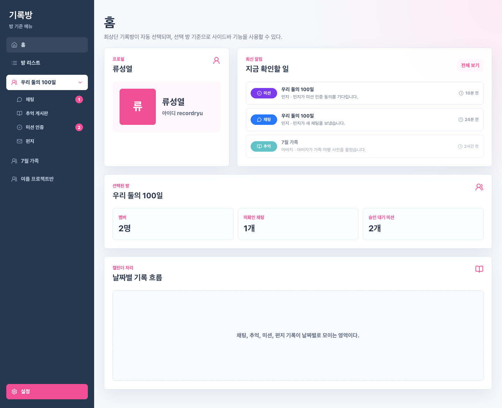
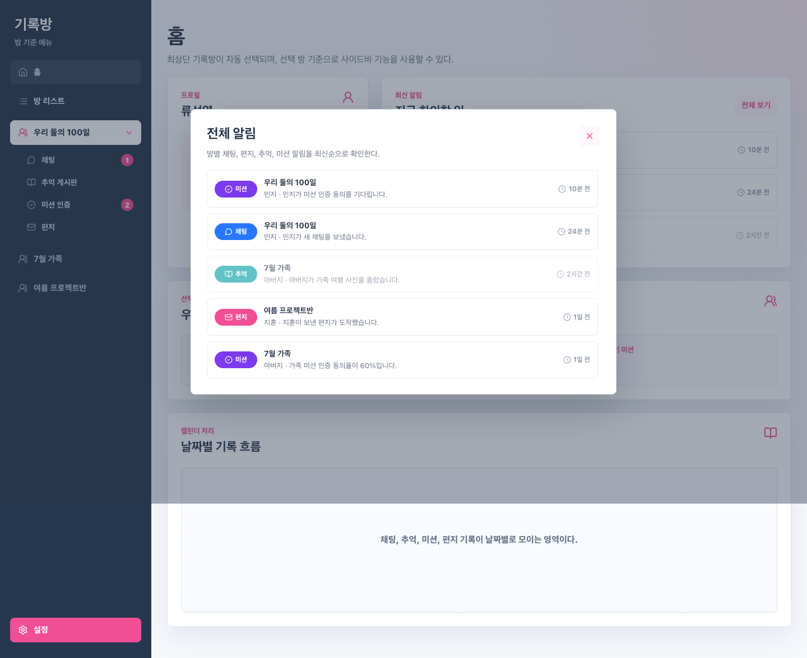
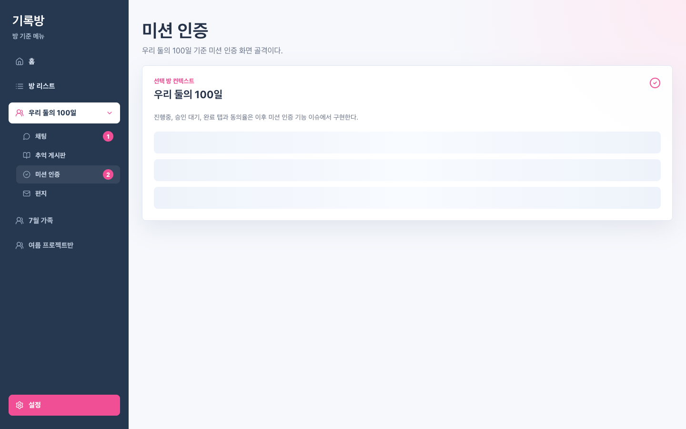
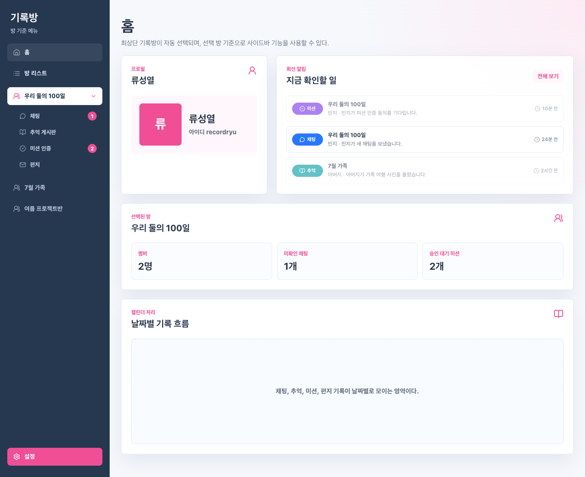
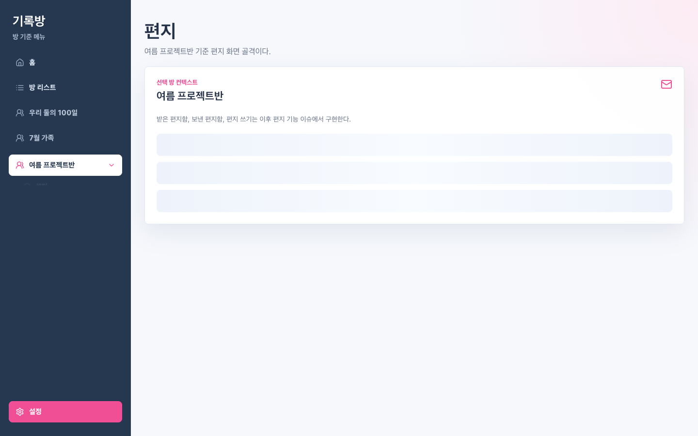

Issue #6 Focused QA 레포트
최신 알림 영역, 전체 보기 모달, 타입별 표시, 클릭 이동/read 처리, 사이드바 inline 회귀를 검증했다.
최종 판정: PASS
검증 대상
Issue: #6
브랜치: feature-6
구현 커밋: 94822e1 feat(notifications): 최신 알림 기능 구현
리뷰 커밋: 0658ead docs(review): 이슈 6 알림 기능 리뷰 기록
검증 시각: 2026. 8. 1. AM 12:37:22
범위
QA Level: Focused QA
Full QA: 실행하지 않음
중점: Home 최신 알림, 전체 알림 모달, read 처리와 대상 화면 이동
판정 요약
BLOCKER/CRITICAL 없음.
- 브라우저 기본 favicon.ico 요청 404는 앱 JS/API 오류가 아니므로 non-blocking으로 분리했다.
검증 항목
| 그룹 | 항목 | 결과 | 상세 | 증거 |
|---|---|---|---|---|
| Screen Spec Match | Home 최신 알림 카드 표시 | PASS | 최신 알림지금 확인할 일전체 보기미션우리 둘의 100일민지 · 민지가 미션 인증 동의를 기다립니다.10분 전채팅우리 둘의 100일민지 · 민지가 새 채팅을 보냈습니다.24분 전추억7월 가족아버지 · 아버지가 가족 여행 사진을 올렸습니다.2시간 전 | evidence/focused-01-home-latest-notifications.png |
| Focused Function | 최신 알림 3개 표시 | PASS | 표시 개수: 3 | evidence/focused-01-home-latest-notifications.png |
| Focused Function | 최신 3개 타입 구분 표시 | PASS | 타입: 미션, 채팅, 추억 | evidence/focused-01-home-latest-notifications.png |
| Focused Function | 클릭 전 첫 알림 unread 상태 | PASS | 첫 알림 class=notification-item unread | evidence/focused-01-home-latest-notifications.png |
| Focused Function | 전체 보기 버튼 클릭 시 modal 표시 | PASS | 전체 알림방별 채팅, 편지, 추억, 미션 알림을 최신순으로 확인한다.미션우리 둘의 100일민지 · 민지가 미션 인증 동의를 기다립니다.10분 전채팅우리 둘의 100일민지 · 민지가 새 채팅을 보냈습니다.24분 전추억7월 가족아버지 · 아버지가 가족 여행 사진을 올렸습니다.2시간 전편지여름 프로젝트반지훈 · 지훈이 보낸 편지가 도착했습니다.1일 전미션7월 가족아버지 · 가족 미션 인증 동의율이 60%입니다.1일 전 | evidence/focused-02-notification-modal.png |
| Focused Function | modal 안 전체 알림 목록 표시 | PASS | modal 알림 개수: 5 | evidence/focused-02-notification-modal.png |
| Focused Function | modal 타입별 구분 표시 | PASS | 타입: 미션, 채팅, 추억, 편지, 미션 | evidence/focused-02-notification-modal.png |
| Focused Function | 알림 클릭 시 해당 기능 화면 이동 | PASS | 미션 알림 클릭 후 미션 인증 화면/방 컨텍스트 확인 | evidence/focused-03-click-mission-target.png |
| Focused Function | 알림 클릭 시 해당 방 선택 | PASS | 선택 방: 우리 둘의 100일, index=0 | evidence/focused-03-click-mission-target.png |
| Regression #5 | 선택 방 하위 메뉴 inline 유지 | PASS | roomBottom=259, submenuTop=263 | evidence/focused-03-click-mission-target.png |
| Focused Function | read 처리 후 읽음 상태 시각 변화 | PASS | 첫 알림 class=notification-item read | evidence/focused-04-read-state-updated.png |
| Focused Function | modal 알림 클릭 시 해당 방 선택 + 기능 화면 이동 | PASS | 선택 방: 여름 프로젝트반, 본문 확인 | evidence/focused-05-modal-letter-target.png |
| Regression #5 | 다른 방 선택 후 inline 위치 유지 | PASS | 선택 방 index=2, hasSubmenu=true | evidence/focused-05-modal-letter-target.png |
| Runtime/UI | 명백한 console error 없음 | PASS | blocking console errors=0 | - |
| Runtime/UI | pageerror 없음 | PASS | pageerrors=0 | - |
| Runtime/UI | API/리소스 4xx/5xx 없음 | PASS | non-favicon 4xx/5xx responses=0 | - |
{kind=link}
{kind=link}
{kind=link}
{kind=link}
{kind=link}
스크린샷 Evidence




